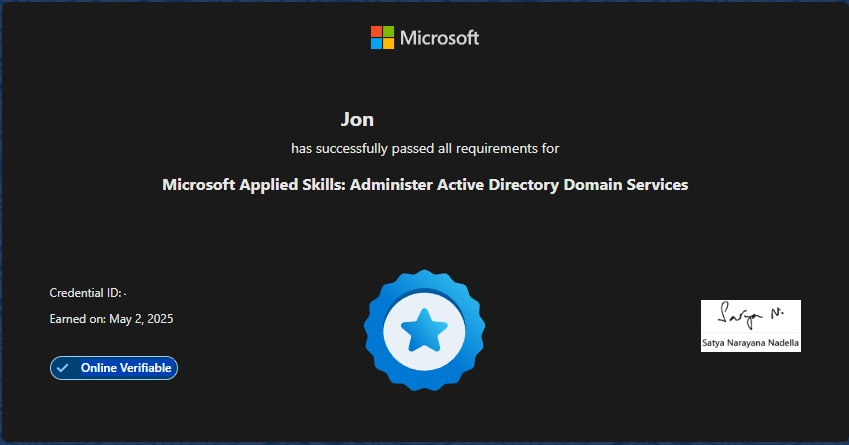

I mainly took this assessment to boost my resume to show that I have a basic understanding of active directory. Both the course and the assessment are free.
The course does a great job of explaining basic AD topics. After each section of the course, you’ll take a small quiz on the things you learned. At the end of the course, you have a hands-on lab that will help you get hands-on experience on the things the course taught you. You will need to install HyperV and some Windows ISOs. You should be able to finish the whole course in under the time they say it takes (5 hours and 13 mins). If you were able to finish the course and retain the info then the assessment will be a walk in the park for you.
The assessment takes place in a virtual lab environment. You will have 2 hours to complete the assessment. Make sure your internet connection is stable because if you do not finish in the allotted time then you will have to wait 72 hours to retake it. You can complete the tasks however you’d like (GUI or Powershell if you're more advanced.) You learned everything you need to know in the course. Once you are done and hit submit your score will appear within 2 minutes. They do a good job at grading and letting you know what part/s you got wrong. A passing score is 70%+.
Good luck!
 ← Back to Certs